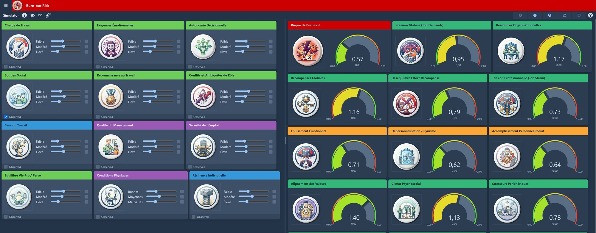

Deux modèles RH à manipuler
Le turnover volontaire et les risques psychosociaux, chacun avec son réseau causal, ses sources, un simulateur pour tester des scénarios et un assistant qui répond à vos questions à partir du graphe.
Turnover · Absentéisme · Risques psychosociaux · Fidélisation
Le turnover, l'absentéisme ou les risques psychosociaux dépendent de dizaines de facteurs en interaction. Noumensia les modélise pour hiérarchiser les leviers qui comptent dans votre contexte — et comparer vos plans d'action sur une même base chiffrée, avant de décider.

Des situations que vous reconnaissez peut-être
Le modèle compare les profils des deux équipes sur l'ensemble des facteurs renseignés — charge de travail, ancienneté, qualité du management perçue, rémunération relative — et classe ceux qui correspondent le mieux à l'écart observé. Au lieu d'une intuition isolée, vous obtenez une hiérarchie de contributions.
Peut-être que les facteurs sur lesquels vous avez agi ne sont pas ceux qui pèsent le plus dans votre contexte. Le modèle peut révéler que la charge de travail, l'organisation ou le management de proximité jouent un rôle plus important que ce que vos indicateurs habituels laissaient voir.
Plutôt que de disperser vos efforts et votre budget en essayant de traiter tous les facteurs de risque avec la même intensité, le modèle hiérarchise les facteurs selon leur contribution estimée aux indicateurs que vous suivez — pour concentrer vos ressources là où elles auront le plus d'impact.
Ce que vous obtenez
Un tableau de bord montre qu'un indicateur a bougé. Une enquête produit des scores d'engagement ou de stress. Mais ni l'un ni l'autre ne dit quels facteurs contribuent à quoi — ni lequel traiter en priorité. La modélisation probabiliste comble cet écart : elle relie ces variables dans un même cadre, rend les relations entre facteurs visibles et discutables, et permet de tester des hypothèses directement sur vos données.
Le modèle est alimenté par trois sources : vos données RH existantes (extraits SIRH, résultats d'enquêtes, indicateurs de suivi), votre connaissance du terrain, et la littérature scientifique qui structure les hypothèses. Leur poids respectif dépend de ce dont vous disposez : plus vos données sont riches, plus le modèle s'y ancre ; à défaut, l'expertise et la littérature prennent le relais — et la part de chacune est explicitée, jamais masquée. Ce qui en sort est propre à votre organisation et votre situation, pas calqué sur une grille standard.
Plutôt que d'arbitrer entre plusieurs plans d'action sans base commune, vous les testez directement sur le modèle. Il indique ce qui devient plus ou moins probable selon le levier activé — une base argumentée pour décider, pas une prédiction certaine. La page Méthode précise les hypothèses sous lesquelles ces comparaisons sont valides.
Vous recevez le modèle interactif, un simulateur de scénarios accessible via navigateur, les résultats commentés, et une restitution conçue pour être partagée en comité de direction ou avec le CSE.

À explorer
Le turnover volontaire et les risques psychosociaux, chacun avec son réseau causal, ses sources, un simulateur pour tester des scénarios et un assistant qui répond à vos questions à partir du graphe.
L'AI Act modélisé en huit graphes, du knowledge graph au réseau bayésien, et des outils pour un DRH qui n'est pas juriste.
Les méta-analyses lues de près, avec ce qu'elles permettent de conclure et ce qu'elles ne permettent pas, reliées au modèle du turnover.
En pratique
L'approche s'adresse en priorité aux directions RH d'entreprises de plus de 200 salariés et aux cabinets de conseil RH qui veulent enrichir leurs diagnostics.
La construction du modèle part de données que vous collectez déjà (extraits SIRH, résultats d'enquêtes, indicateurs de suivi) et celles collectées pendant la mission. Le travail respecte les exigences du RGPD, et les échanges sont couverts par un accord de confidentialité dès la première réunion.
La démarche commence par un entretien de cadrage — sans engagement — pour vérifier si l'approche est adaptée à votre situation et définir un premier périmètre, volontairement resserré, sur lequel démontrer la valeur avant d'élargir. Le travail de modélisation prend ensuite typiquement 4 à 8 semaines selon la disponibilité des données et la complexité du sujet.
Chaque modèle de ce site, je l'ai construit moi-même, et chaque hypothèse y est écrite pour être discutée. Du cadrage à la livraison, c'est à moi que vous parlez. Arthur Jouffe →